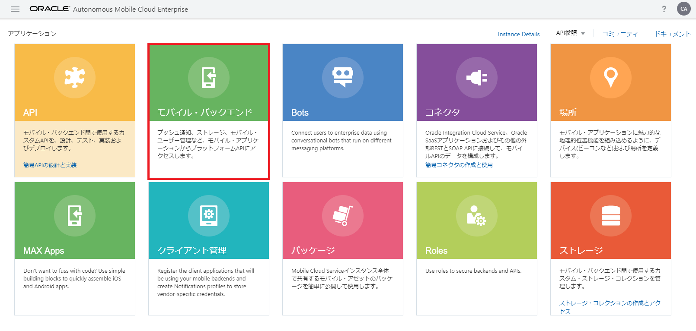
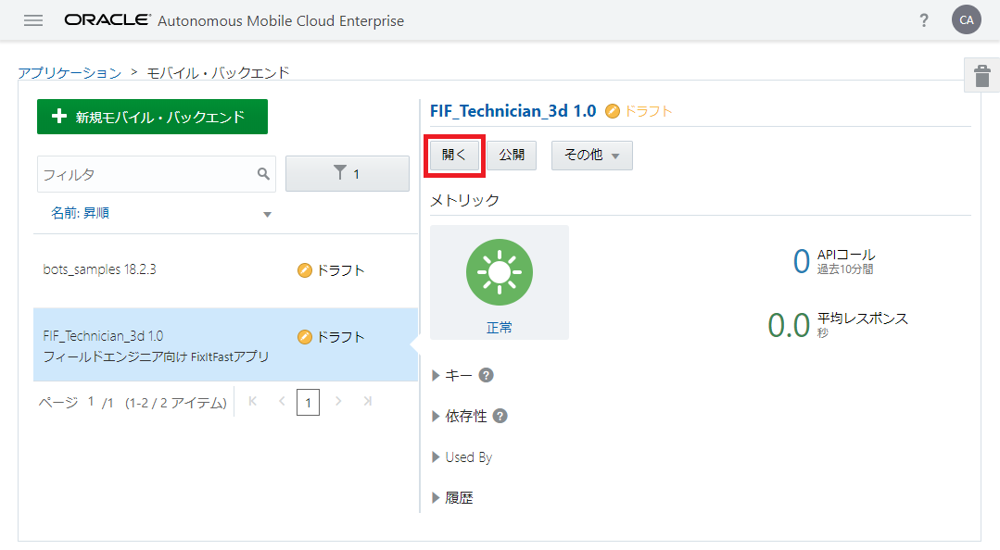
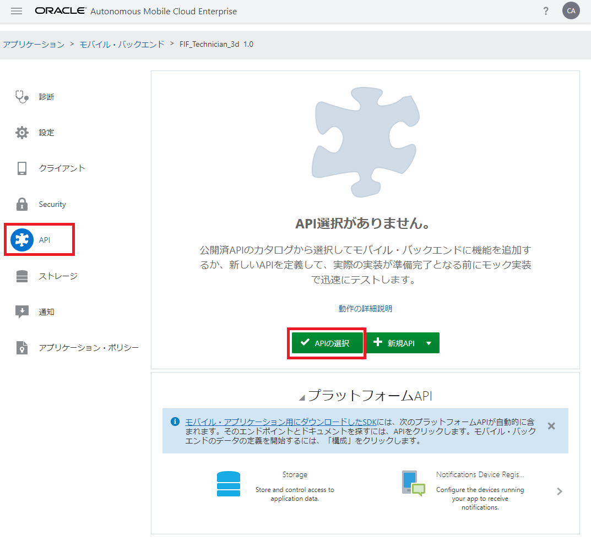
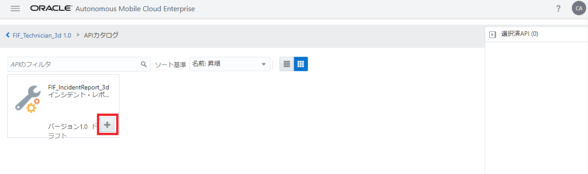
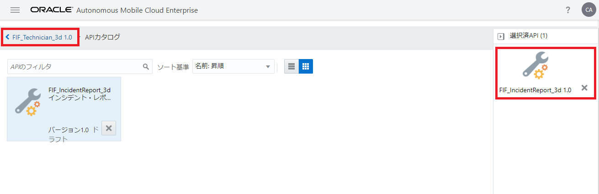

モバイル・バックエンドとカスタムAPIの関連づけ
実際にモバイル・アプリからAMCe上で実行されているカスタムAPIをコールするためには、モバイル・バックエンドとカスタムAPIを関連づける必要があります。手順は次のとおりです。
Step-1 サービス・コンソールにログインし、ハンバーガー・アイコンをクリックして画面左のメニューから「アプリケーション」を選択します。「アプリケーション」ページが表示されたら、「モバイル・バックエンド」をクリックします。

図：「アプリケーション」ページで「モバイル・バックエンド」をクリック
Step-2 画面左のリストから、「FIF_Technician_xx（このハンズオンの『モバイル・バックエンドの作成』で作成したモバイル・バックエンド）を選択し、「開く」ボタンをクリックします。
備考：モバイル・バックエンドの名前につけた「xx」の文字列で検索すると、リストされるモバイル・バックエンドがフィルタリングされて便利です。

図：モバイル・バックエンドを選択して「開く」ボタンをクリック
Step-3 モバイル・バックエンドの「API」ページを開き、「APIの選択」ボタンをクリックします。

図：モバイル・バックエンドの「API」ページで「APIの選択」ボタンをクリック
Step-4 「APIカタログ」が表示されます。「FIF_IncidentReport_xx」（このハンズオンの『RAMLドキュメントを使用したAPIの定義とテスト』で登録したカスタムAPI）のボックスの右下に表示されている「＋（APIの選択）」ボタンをクリックします。

図：APIカタログで「FIF_IncidentRepor_xx」を選択
Step-5 画面右側の「選択済みAPI」に「FIF_IncidentRepor_xx」が表示されます。

図：APIカタログでAPIを選択した状態
画面左上のリンク「< FIF_Technician_xx 1.0」をクリックします。